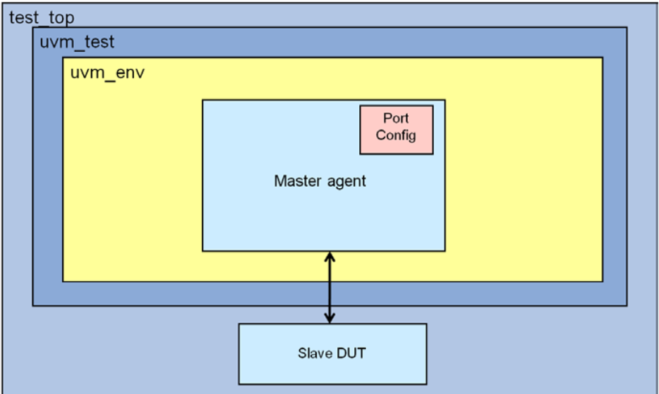
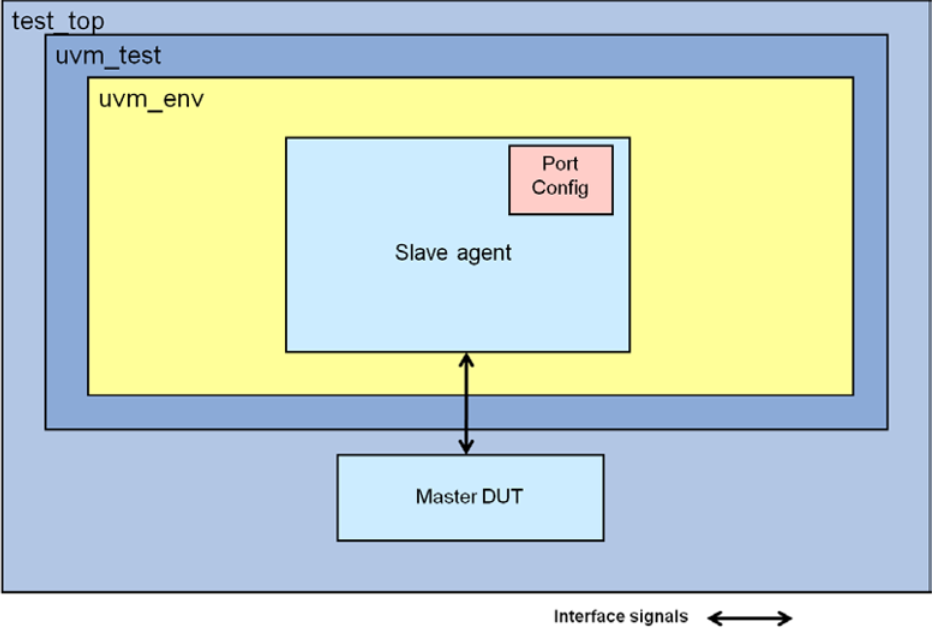

The AXI4-stream protocol is used as a standard interface to connect components that share data. The interface can be used to connect a single master, that generates data, to a single slave, that receives data. The protocol can also be used when connecting larger numbers of master and slave components. The data is shared in the form of data streams. A data stream can be a series of individual byte transfers or a series of byte transfers grouped together in packets.
The following section describes the below components:
Master Agent
The Master Agent encapsulates Master Sequencer, Master Driver, and Port Monitor. The Master Agent can be configured to operate in active mode and passive mode. You can provide AXI4_STREAM sequences to the Master Sequencer.
The Master Agent is configured using a port configuration, which is available in the system configuration. The port configuration should be provided to the Master Agent in the build phase of the test.
Within the Master Agent, the Master Driver gets sequences from the Master Sequencer. The Master Driver then drives the AXI4_STREAM transactions on the AXI4_STREAM port. The Master Driver and port Monitor components within Master Agent call callback methods at various phases of execution of the AXI4_STREAM transaction.
After the AXI4_STREAM transaction on the bus is complete, the completed sequence item is provided to the analysis port of Port Monitor for use by the testbench.
Figure 10‑1 Usage With Standalone Master Agent

Slave Agent
The Slave Agent encapsulates Slave Sequencer, Slave Driver, and Port Monitor. The Slave Agent can be configured to operate in active mode and passive mode. You can provide ATB response sequences to the Slave Sequencer.
The Slave Agent is configured using port configuration, which is available in the system configuration. The port configuration should be provided to the Slave Agent in the build phase of the test or the testbench environment.
In the Slave Agent, the Port Monitor samples the AXI4_STREAM port signals. When a new transaction is detected, the Port Monitor provides a response request sequence item to the Slave Sequencer through port response_request_port. The slave response sequence within the sequencer programs the appropriate slave response. The updated response sequence item is then provided by the Slave Sequencer to the Slave Driver. The Slave Driver in turn drives the response on the AXI4_STREAM bus.
The slave driver expects the slave response sequence to,
Return same handle of the slave response object as provided to the sequencer by the port monitor
Return the slave response object in zero time, that is, without any delay after sequencer receives object from the port monitor
If any of the above conditions are violated, the slave agent issues a FATAL message.
The Slave Driver and Monitor call callback methods at various phases of execution of the AXI4_STREAM transaction. After the AXI4_STREAM transaction on the bus is complete, the completed sequence item is provided to the analysis port for use by the testbench.
Figure 10‑2 Usage with Standalone Slave Agent

Agents in Active and Passive Mode
Component behavior in active mode
In active mode, Master and Slave components generate transactions on the signal interface.
Master and Slave components continue to perform passive functionality of coverage and protocol checking. You can enable/disable this functionality through configuration.
The Port Monitor within the component performs protocol checks only on sampled signals. That is, it does not perform checks on the signals that are driven by the agent. This is because when the agent is driving an exception (exceptions are not supported in this release) the Monitor should not flag an error, since it knows that it is driving an exception. Exception means error injection.
Component behavior in passive mode
In passive mode, master and slave components do not generate transactions on the signal interface. These components only sample the signal interface.
Master and Slave components monitor the input and output signals, and perform passive functionality such as coverage and protocol checking. You can enable/disable this functionality through configuration options.
The port monitor within the component performs protocol checks on all signals. In passive mode, signals are considered as input signals.